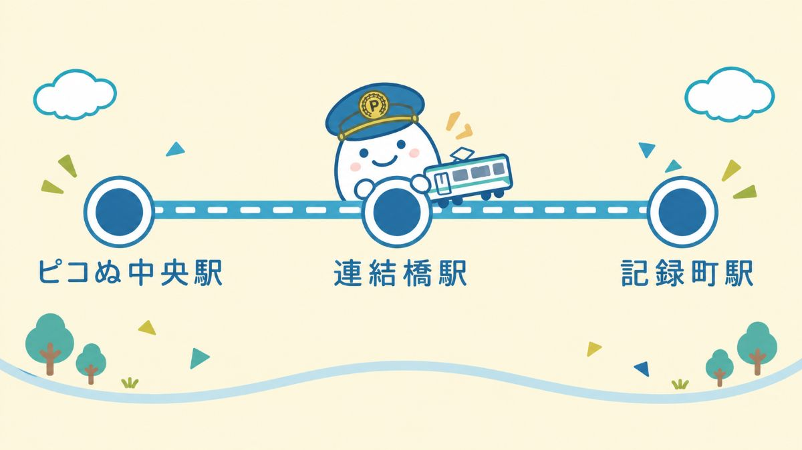
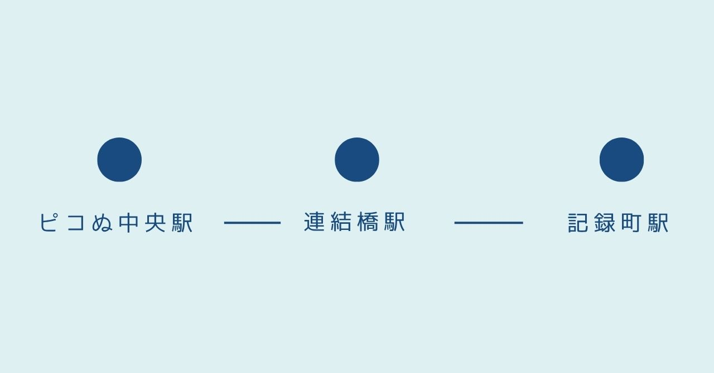

■ 路線概要
ピコぬ市交通局は、市内に1路線3駅を運行しています。ピコぬ中央駅を起点に、連結橋駅を経て記録町駅に至る区間を結んでおり、開業以来、路線・駅数とも大きな変更なく運行を続けています。
市内は徒歩でも巡ることができる規模であるため、駅数をいたずらに増やすことはせず、歩いて巡る街としての雰囲気を大切にした運行方針をとっています。駅と駅の間を歩くことも、当局としては想定内の利用のひとつと考えています。
市内交通としては、通勤・通学のほか、観光や施設をめぐる移動手段としての役割も担っています。
■ 路線図

※図は駅の順序を示すものであり、実際の距離・方角を表すものではありません。
■ 各駅のご案内
ピコぬ中央駅
市の玄関口にあたる駅です。ぬかピコ民芸博物館、市役所方面へお越しの際にご利用いただけます。
連結橋駅
ぬかピコ川、連結橋、遊歩道方面の最寄り駅です。観光の中心駅として位置づけています。
記録町駅
記録町商店街、市立図書館、キロクぬかクリニック方面の最寄り駅です。
■ 運行について
| 編成 | 2両編成 |
|---|---|
| 運行間隔 | おおむね15分間隔 |
| 駅名 | 始発 | 最終 |
|---|---|---|
| ピコぬ中央駅 | 5:42 | 23:18 |
| 連結橋駅 | 5:46 | 23:22 |
| 記録町駅 | 5:51 | 23:27 |
※天候や設備点検等により、時刻が変更となる場合があります。詳しい運行状況は交通局トップページをご確認ください。
■ 駅から徒歩で巡る
ピコぬ市交通局の各駅から主要な施設までは、徒歩5〜10分程度でお越しいただけます。駅と駅の間についても、無理なく歩いて移動できる距離を目安としています。
当局では、列車での移動だけでなく、駅を起点に歩いて市内を巡っていただくことも、ひとつの利用のかたちと考えています。急がず、歩幅に合わせて街をご覧いただければ幸いです。
■ お問い合わせ
| 窓口 | ピコぬ市交通局代表 |
|---|---|
| 所在地 | ピコぬ市中央3丁目3番地 |
| 受付時間 | 平日 9:00〜16:00 |
| 電話 | ぬぬ-ぬかピコ-2794(つなぐよ) |